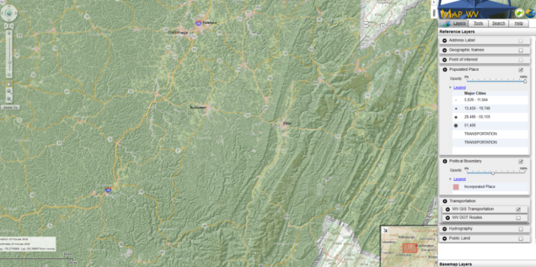

Hidden slides are left out of the presentation.
What IS the GeoWeb?
"The GeoWeb can be more broadly considered the intersection of geospatial awareness and Web 2.0" Goodchild (2007)
Six Reasons The Public Hates Your Web Mapping App @Eric_Edmonds: http://j-vh.me/15ApDcw
- It Loads Slow
- It Is Ugly
- You Can't Print
- Incomplete and Outdated Information
- Learning Curve > 5 Seconds
- Not Mobile Friendly
- Denver Metrics
- #1: Single-Topic Maps Get 3x Traffic Than Traditional Map Portals
- #2: 60% Of Traffic Comes Directly From Search Engines
- #3: Auto-Complete Drives Clean User Queries
- #4: People Look Up Info on Maps, and Leave
- #5: People Interact with Balloon Content
- #6: People Rarely Change Default Map Settings
Why Map 'Portals' Don't Work
"FAST • INTUITIVE • INFORMATIVE • FAST" -- @briantimoney: http://j-vh.me/10mThTv

http://j-vh.me/YqFa8P
Encouraging Use & Participation @Eric_Edmonds: http://j-vh.me/15ApDcw
- Simplify, Synthesize, Visualize
- EASY, Fast, Interactive, Attractive
- Single Content Portals
- Mouse-Over Content
- Multiple Format
- HTML5 Compliant
- Open Access Data
Thank You!